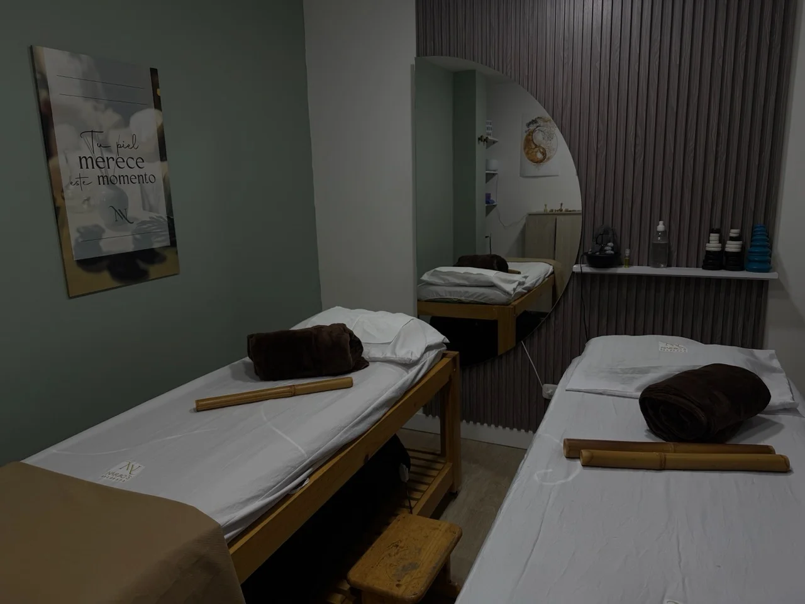
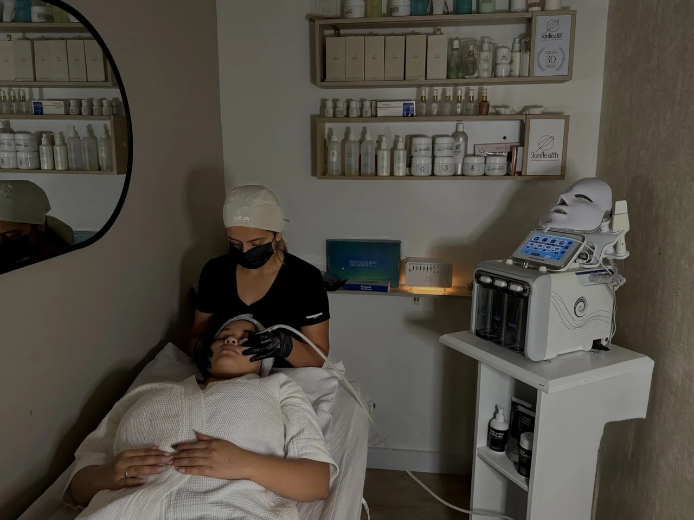
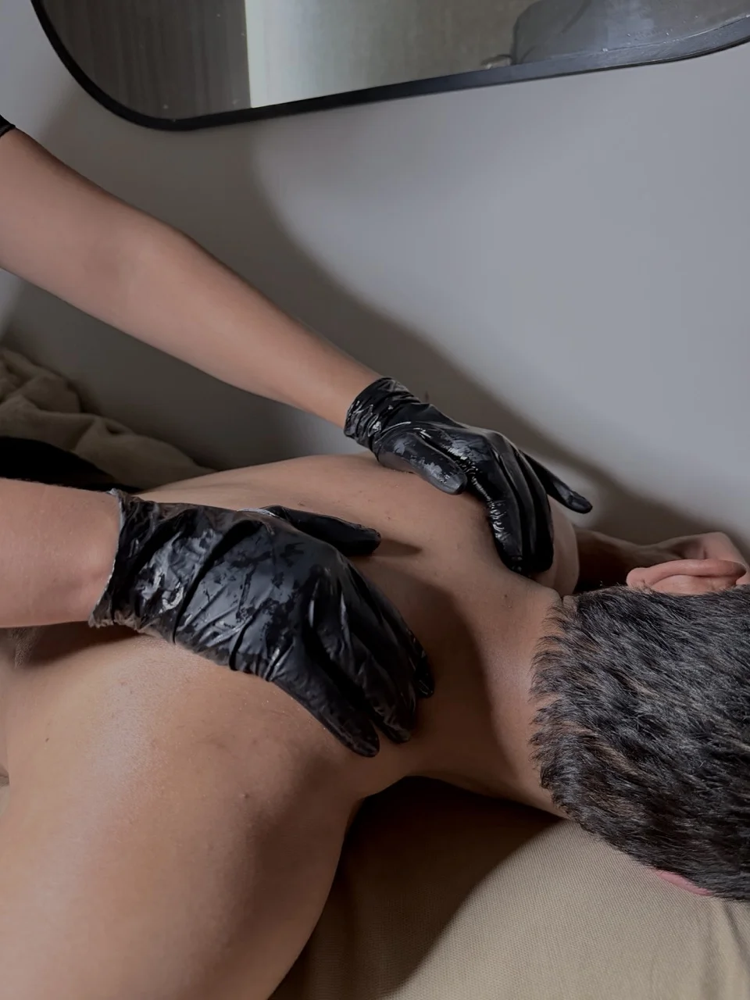

Estética y Spa en Chía
Relájate y renueva tu energía con nuestros tratamientos faciales y corporales.
Elige tu Experiencia
Renueva tu piel y relaja tus sentidos. Disfruta de nuestras limpiezas faciales profundas, masajes y depilación en un ambiente de total relajación.

Limpieza Facial Básica
Protocolo esencial para eliminar impurezas y restaurar el equilibrio de tu piel.

Masaje Relajante
1 hora de relajación total para desconectar cuerpo y mente.

Depilación (Cera e Hilo)
Sistemas suaves y efectivos para una piel sedosa en cualquier área.
Momentos de Relax
Preguntas Frecuentes
¿Cómo sé qué tipo de limpieza facial necesita mi piel?
No te preocupes. Antes de iniciar, nuestras esteticistas realizan un análisis de piel profesional (diagnóstico) para evaluar tu nivel de hidratación, poros y sensibilidad. Basado en esto, personalizamos el protocolo: ya sea una limpieza profunda, hidratante anti-edad o control de acné.
¿Qué tipos de masajes relajantes ofrecen?
Contamos con una carta variada que incluye: Masaje Relajante Clásico (sueco), Masaje con Piedras Volcánicas (termoterapia) y Masaje Descontracturante (ideal para tensión muscular). Todos se realizan en cabinas privadas ambientadas con aromaterapia y música suave.
¿Puedo maquillarme después de una limpieza facial?
Recomendamos dejar la piel "respirar" y libre de maquillaje durante al menos 12 a 24 horas post-tratamiento para maximizar la oxigenación y absorción de los nutrientes aplicados. Lo que sí es indispensable es el uso de protector solar.
¿Qué tipo de cera utilizan para la depilación?
Utilizamos ceras de baja fusión y alta elasticidad, ideales para pieles sensibles. Esta técnica minimiza el dolor y la irritación, siendo efectiva tanto para zonas delicadas (rostro, bikini) como para áreas grandes (piernas).
¿Realizan diseño de cejas con henna o laminado?
Sí. Además de la depilación y perfilado, ofrecemos servicios de tendencia como sombreado temporal con Henna y Laminado de Cejas para lograr un efecto volumen y definición natural que enmarca tu mirada.
¿Dónde puedo encontrar un Spa Facial cerca de Fontanar?
¡Estás en el lugar indicado! Narbo's Salón & Spa se encuentra a pocos minutos del centro comercial Fontanar, en los bajos del Hotel Ibis Chía. Ofrecemos una experiencia VIP de relajación y estética con fácil acceso y parqueadero.